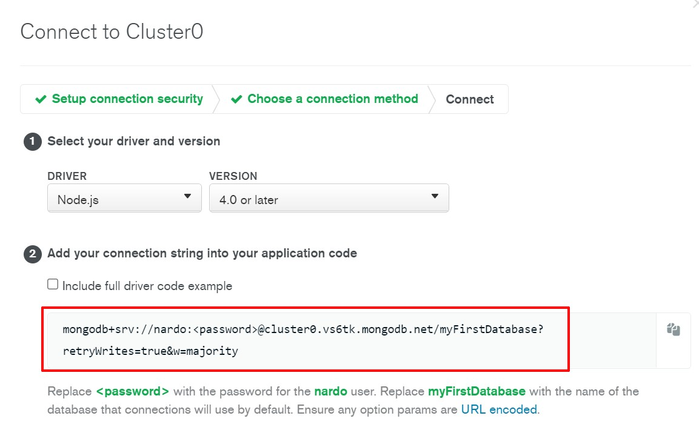
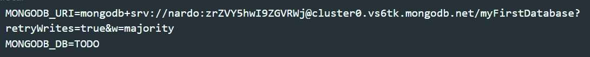

Для создания проекта в консоле вводим команду:
npx create-next-app --example with-mongodb mflixГде mflix - это название проекта. Здесь можно вместо mflix указать точку и тогда система не создаст папку с проектом и закачает проект в текущую папку откуда был запущена команда npx
После того как проект был создан, первое что нам нужно сделать это найти в корне проекта файл .env.local.example и переименовать его в .env.local
Далее в этот файл нужно добавить две строчки:
MONGODB_URI - это путь до нашего кластера в Atlas MongoDB. Здесь важно то, что в качестве пароля необходимо указать пароль пользователя который мы указале в настройках атласа MongoDB
Для MONGODB_DB просто указываем имя БД которое будет создано в атласе
После этих манипуляций можно запускать проект и он запустится без ошибок
В папке pages создаем папку api. Внутри создаем файл movies.js